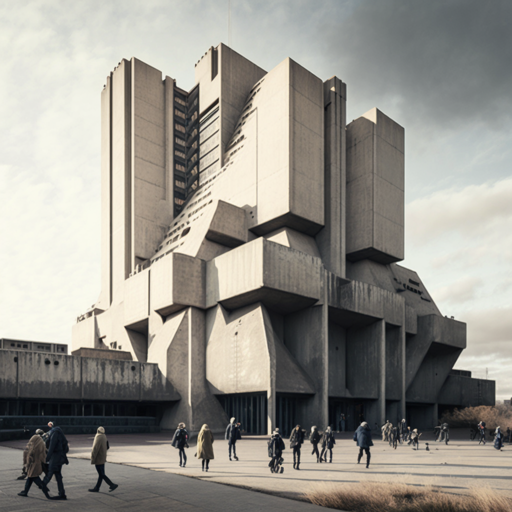
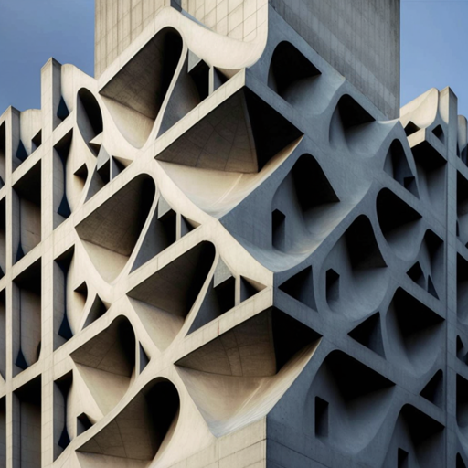

Brutalist architecture has been the subject of numerous controversies since its inception in the mid-twentieth century. Many critics argue that the style is too harsh, oppressive, and uninviting, and that it prioritizes function over aesthetics. In addition, some people believe that brutalist buildings are difficult to maintain, as the exposed concrete used in their construction is susceptible to weathering and decay.
Another common criticism of brutalist architecture is its association with authoritarian regimes and oppressive governments. Many brutalist buildings were constructed during the Cold War era, and some of them were designed to showcase the power and might of the state. As a result, many people view brutalist architecture as a symbol of oppression and totalitarianism.
Despite these criticisms, however, there are many defenders of brutalist architecture who believe that the style is an important part of our architectural heritage. They argue that brutalist buildings are unique and innovative, and that they often incorporate cutting-edge technologies and design principles. In addition, many people appreciate the raw, unpolished look of brutalist architecture, and believe that it reflects an honest and unpretentious approach to building design.
Overall, the controversies surrounding brutalist architecture are complex and multifaceted. While there are valid criticisms of the style, there are also many defenders who believe that brutalism represents an important chapter in the history of architecture. Whether you love it or hate it, there is no denying that brutalist architecture has left an indelible mark on the built environment, and will continue to be a subject of debate and discussion for many years to come.